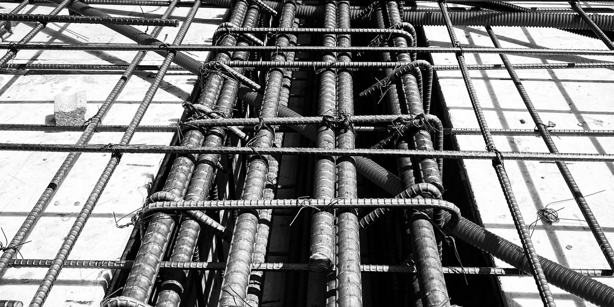
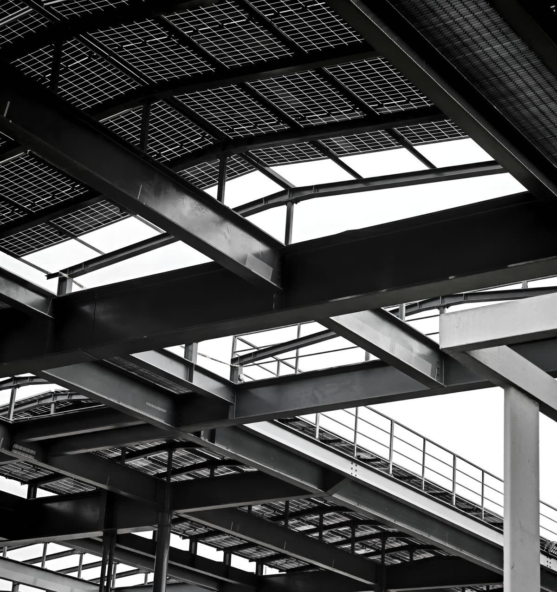

Ingenieurbüro MEMIC · Mannheim
Statik, die trägt. Tragwerksplanung für Wohnungs-, Gewerbe- und Industriebau.
Das Ingenieurbüro MEMIC bearbeitet Tragwerksplanungen für Neubauten, Umbauten und bestehende Bauwerke. Unser Leistungsspektrum reicht von der statischen Berechnung bis zur konstruktiven Ausführungsplanung in Massiv-, Stahl-, Holz- und Mauerwerksbauweise.
Auf dieser Website geben wir einen Einblick in unsere Leistungen, unsere Arbeitsweise und ausgewählte Projekte.
- Projekt
- Ihr Bauvorhaben
- Planinhalt
- Querschnitt, schematisch
- Maßstab
- 1:100
- Nachweisberechtigt
- BW St-0556 · HE St-3515A-IngKH
- Büro
- Ing.-Büro Memic · Mannheim
- Stand
- 2026
- 17+Jahre Berufserfahrung als Statiker
- 2Nachweisberechtigungen für Standsicherheit: Baden-Württemberg · Hessen
- LPH 1–6Tragwerksplanung von der Konzeption bis zur Ausführungsplanung
- DeutschlandweitProjekte im Wohnungs-, Gewerbe- und Industriebau
Haltung
Gute Statik beginnt mit einem klaren Tragwerkskonzept. Berechnung, Konstruktion und Ausführung müssen zusammenpassen. Deshalb denken wir über den rechnerischen Nachweis hinaus und stimmen konstruktive Details frühzeitig mit Planung und Ausführung ab.
Das Ingenieurbüro MEMIC ist inhabergeführt. Projekte werden persönlich und mit kurzen Abstimmungswegen bearbeitet – von der Entwicklung des Tragwerkskonzepts über die statische Berechnung und Ausführungsplanung bis zur Begleitung während der Bauausführung.
Die enge Zusammenarbeit mit Architekten, Bauherren, Fachplanern, ausführenden Unternehmen und Prüfingenieuren ist dabei ein wesentlicher Bestandteil unserer Arbeit.
Mehr über das Büro- SitzMannheim
- TätigkeitsgebietDeutschlandweit
- NachweisberechtigungBaden-Württemberg · Hessen
- Berufserfahrungseit 2008
- Ingenieurbüro MEMICgegründet 2021, hauptberuflich seit 2025

Was später niemand mehr sieht, entscheidet über alles.
SymbolbildLeistungen
Unsere Leistungen
Unser Schwerpunkt liegt in der Tragwerksplanung und konstruktiven Ausarbeitung von Neubauten, Umbauten und bestehenden Bauwerken. Je nach Aufgabenstellung begleiten wir Projekte von der ersten Konzeption über die statische Berechnung bis zur Ausführungsplanung und Bauausführung.
(01)Tragwerksplanung & Statik4
Entwicklung und Berechnung von Tragwerken für Neubauten, Umbauten und bestehende Bauwerke. Im Mittelpunkt stehen klare Tragwerkskonzepte, nachvollziehbare statische Nachweise und konstruktiv umsetzbare Lösungen.
- Tragwerkskonzeption und Vorbemessung
- Statische Berechnungen und Standsicherheitsnachweise
- Tragwerksplanung für Neubau, Umbau, Aufstockung und Bestand
- Massiv-, Stahl-, Holz- und Mauerwerksbau
(02)Ausführungsplanung5
Die konstruktive Durcharbeitung bildet die Verbindung zwischen statischer Berechnung und Bauausführung. Auf Grundlage der Tragwerksplanung erstellen wir die für die Ausführung erforderlichen Pläne und Details und stimmen diese mit den Projektbeteiligten ab.
- Schalpläne
- Bewehrungspläne und Stahllisten
- Konstruktionspläne
- Stahlbau- und Anschlussdetails
- Ausführungsdetails
(03)Bauen im Bestand6
Umbauten und Eingriffe in bestehende Tragwerke erfordern eine genaue Auseinandersetzung mit der vorhandenen Konstruktion. Wir untersuchen die statischen Randbedingungen und entwickeln darauf abgestimmte Lösungen für Änderungen, Erweiterungen und Verstärkungen.
- Umbauten
- Aufstockungen
- Wanddurchbrüche
- Nutzungsänderungen
- Verstärkungsmaßnahmen
- Bewertung bestehender Tragwerke
(04)Gutachten & technische Stellungnahmen5
Beurteilung bestehender Tragwerke bei Schäden, Umbauten, Nutzungsänderungen oder konstruktiven Eingriffen. Auf Grundlage der vorhandenen Konstruktion und der örtlichen Gegebenheiten untersuchen wir die Standsicherheit und entwickeln bei Bedarf geeignete Sicherungs- oder Verstärkungsmaßnahmen.
- Gutachten und Stellungnahmen zur Standsicherheit
- Tragfähigkeitsbewertungen bestehender Konstruktionen
- Schadensbeurteilungen und Bestandsuntersuchungen
- Sanierungs- und Verstärkungskonzepte
- Beweissicherung und bautechnische Dokumentation
(05)Baubegleitung & Abnahmen4
Die Umsetzung tragwerksrelevanter Details begleiten wir bei Bedarf auch während der Bauausführung. Vor Ort prüfen wir die Übereinstimmung mit der Tragwerks- und Ausführungsplanung und klären konstruktive Fragestellungen gemeinsam mit den Projektbeteiligten.
- Baubegleitende Kontrolle tragwerksrelevanter Ausführungen
- Bewehrungsabnahmen vor dem Betonieren
- Kontrolle konstruktiver Details und Anschlüsse
- Technische Klärung bei Abweichungen während der Ausführung
(06)Bauphysik3
Die Nachweise, die für Bauantrag, Förderung und Verkauf gebraucht werden – aus demselben Büro wie die Statik.
- Wärmeschutznachweise nach GEG und für KfW-Förderung
- Energieausweise (dena-registriert)
- Schallschutznachweise nach DIN 4109
(07)Konstruktiver Brandschutz2
Wie lange ein tragendes Bauteil im Brandfall hält, wird nachgewiesen – nicht geschätzt.
- Nachweise des konstruktiven Brandschutzes nach Eurocode
- Feuerwiderstand tragender Bauteile
Bauaufgaben
Vom Wohnungsbau bis zur Industriehalle.
Unsere Projekte reichen vom Wohnungsbau über Gewerbe- und Industriebauten bis zu Umbauten und Eingriffen in bestehende Tragwerke. Jede Bauaufgabe stellt dabei eigene Anforderungen an Tragwerk, Konstruktion und Ausführung.

-
03.1
Wohnungsbau
- Ein- und Mehrfamilienhäuser
- Neubau, Umbau und Erweiterung
- Aufstockungen
- An- und Durchbrüche
- Nutzungsänderungen
-
03.2
Gewerbe- & Industriebau
- Produktions- und Lagerhallen
- Stahl- und Massivbaukonstruktionen
- Büro- und Sozialbereiche
- Stahlbühnen und Tragkonstruktionen
- Umbauten und Erweiterungen bestehender Anlagen
-
03.3
Sonderkonstruktionen
- Stahlbühnen und Galerien
- Treppen und Sondertragwerke
- Stütz- und Winkelstützwände
- Kran- und Maschinenlasten
- Fundamente und besondere Gründungen
-
03.4
Bauen im Bestand
- Umbauten und Nutzungsänderungen
- Aufstockungen und Erweiterungen
- Tragwerksverstärkungen
- Bewertung bestehender Konstruktionen
- Tragwerke unter Denkmalschutz
Referenzen
Berechnet. Geplant. Ausgeführt.
Ausgewählte Projekte geben einen Einblick in unsere Tragwerks- und Ausführungsplanung. Gezeigt werden Ausschnitte aus statischen Berechnungen, Positions-, Schal- und Bewehrungsplänen sowie konstruktive Details und Bilder aus der Bauausführung.
Profil
Denis Memic Dipl.-Ing. · Bauingenieur, Tragwerksplaner
Denis Memic studierte Bauingenieurwesen mit Schwerpunkt Konstruktiver Ingenieurbau an der Universität Tuzla und ist seit 2008 in der Tragwerksplanung tätig. Nach mehreren Jahren Berufserfahrung in Bosnien und Herzegowina wechselte er 2015 nach Deutschland. Es folgten Tätigkeiten in der Tragwerksplanung und im konstruktiven Ingenieurbau, unter anderem über mehrere Jahre bei Goldbeck Südwest.
Heute liegt der Schwerpunkt seiner Tätigkeit auf der Tragwerks- und Ausführungsplanung für Projekte im Wohnungs-, Gewerbe- und Industriebau sowie auf dem Bauen im Bestand.
- Nachweisberechtigt Standsicherheit · Baden-Württemberg
- St-0556
- Nachweisberechtigt Standsicherheit · Hessen
- St-3515A-IngKH
- Energieausweise
- dena-registriert
- Berufshaftpflicht
- AIA AG · Düsseldorf
Werdegang
- 2004Studium BauingenieurwesenUniversität Tuzla
- 2008StatikerSirbegovic d.o.o., Gračanica
- 2012StatikerBaupartner d.o.o., Gračanica
- 2015TragwerksplanerHalber GmbH, Braunschweig
- 2018TragwerksplanerGoldbeck Südwest GmbH, Hirschberg
- 2021GründungIngenieurbüro MEMIC, Mannheim
- 2025Hauptberuflich selbständigIngenieurbüro MEMIC, Mannheim
Häufige Fragen
Häufige Fragen aus der Praxis.
Ihre Frage ist nicht dabei? Rufen Sie einfach an: 0174 9648772.
Welche Unterlagen werden für die Tragwerksplanung benötigt?
Die erforderlichen Unterlagen hängen vom jeweiligen Bauvorhaben und Planungsstand ab. In der Regel werden aktuelle Architekturpläne, Angaben zum Baugrund sowie – bei Bestandsgebäuden – vorhandene Bestandsunterlagen benötigt. Weitere erforderliche Unterlagen stimmen wir projektbezogen ab.
Welche Leistungsphasen übernimmt das Ingenieurbüro MEMIC?
Wir bearbeiten Tragwerksplanungen von der Konzeption und Vorbemessung über die statische Berechnung bis zur Ausführungsplanung. Je nach Projekt können einzelne Leistungen oder mehrere Leistungsphasen übernommen werden.
Erstellen Sie auch Schal- und Bewehrungspläne?
Ja. Die Ausführungsplanung mit Schal- und Bewehrungsplänen sowie konstruktiven Details gehört zu unseren regelmäßigen Leistungen. Bei Stahlkonstruktionen bearbeiten wir projektabhängig auch Konstruktions- und Anschlussdetails.
Bearbeiten Sie auch Umbauten und bestehende Gebäude?
Ja. Dazu gehören unter anderem Umbauten, Aufstockungen, Wand- und Deckendurchbrüche, Nutzungsänderungen sowie die Beurteilung und Verstärkung bestehender Tragwerke.
Übernehmen Sie auch die Begleitung während der Bauausführung?
Bei Bedarf begleiten wir Projekte auch während der Ausführung. Dazu gehören die Klärung konstruktiver Fragestellungen, Kontrollen tragwerksrelevanter Ausführungen sowie die Kontrolle der Bewehrung vor dem Betonieren.
Bearbeiten Sie Projekte außerhalb von Mannheim?
Ja. Das Ingenieurbüro MEMIC bearbeitet Projekte deutschlandweit. Abstimmungen mit Bauherren, Architekten, Fachplanern, ausführenden Unternehmen und Prüfingenieuren erfolgen projektabhängig digital und vor Ort.
Kontakt
Kontakt & Projektanfragen.
Für Fragen zu laufenden Projekten, neuen Bauvorhaben oder einer möglichen Zusammenarbeit erreichen Sie uns telefonisch oder per E-Mail. Projektunterlagen und Pläne können Sie gerne direkt mitsenden.
Hintergrund: Symbolbild